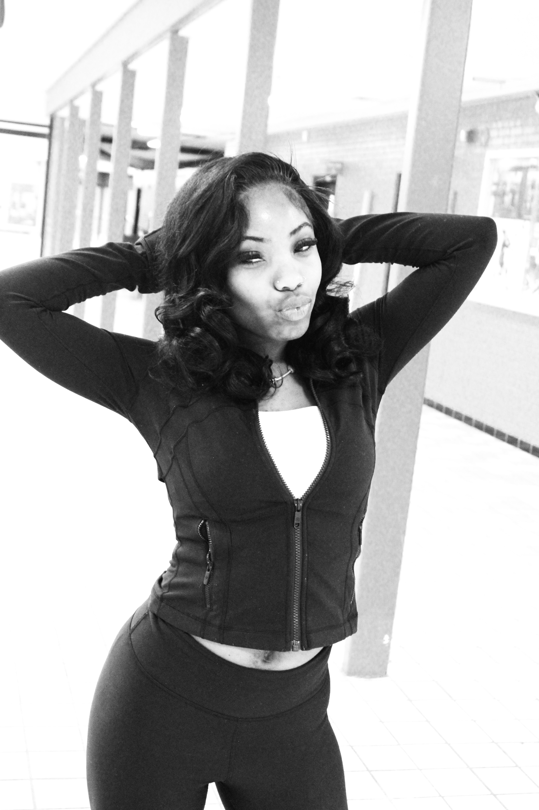
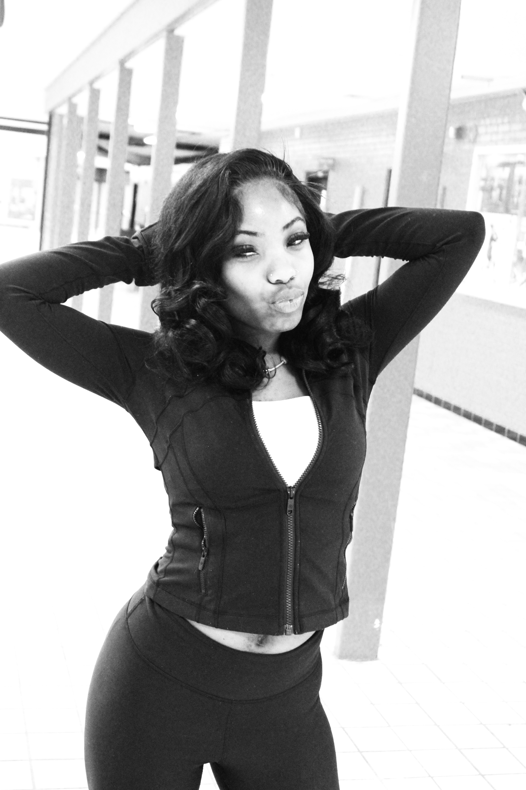
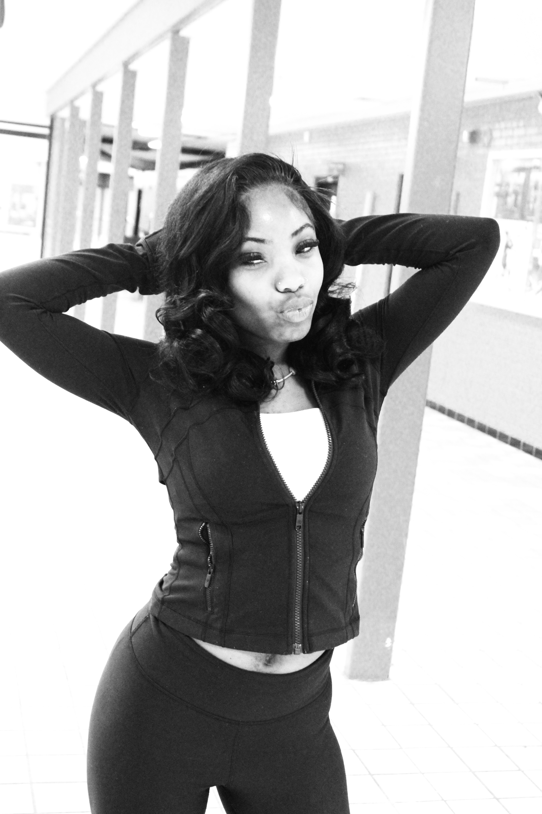

Aden
Seven
Anderson
since 05 / 12 / 2010
like what u see? you should scroll ↓

Untitled Experiment 001
Photography as editorial instinct. Framing before perfection.
Printed Noise
Visual tension over symmetry. Zine logic applied to web space.

 
